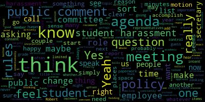
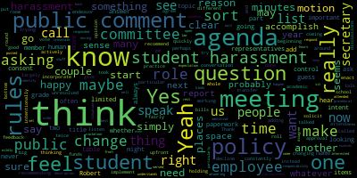

total time: 34.28 minutes
total words: 4878
{kind=link}
total time: 6.36 minutes
total words: 971

total time: 9.49 minutes
total words: 1413

[Ruseau]: Wait, is Jenny on this or is Melanie on this? Melanie's on it.
[Van der Kloot]: Right, and I'm sitting in for Melanie.
[Ruseau]: Right. Just suddenly, I'm like, wait, who else is on my subcommittee? So who's the third? It's Jenny, isn't it? It is Jenny, yes. Sorry, I had the agenda right in front of me. I could have just looked there. All right, I just pinged her. Hello, everyone. I believe we have everybody we require. So I'm going to get this meeting started. Good evening, it's April 7th, Wednesday, April 7th, 4.03 PM, and I'm calling to order the Rules Policy and Equity Subcommittee meeting. Please be advised that on Wednesday, April 7th, 2021, from 4 to 5 PM, there will be a Rules Policy and Equity Subcommittee meeting held through remote participation via Zoom. Pursuant to Governor Baker's March 12th, 2020 order, suspending certain provisions of the open meeting law and the governor's March 15th, 2020 order imposing strict limitations on the number of people that may gather in one place, this meeting of the Medford School Committee will be conducted via remote participation to the greatest extent possible. Specific information and the general guidelines for remote participation by members of the public and or parties with a right and or requirement to attend this meeting can be found on the City of Medford website. For this meeting, members of the public who wish to listen or watch the meeting may do so by accessing the meeting link contained herein No in-person attendance of members of the public will be permitted, but every effort will be made to ensure that the public can adequately access the proceedings in real time via technological means. In the event that we are unable to do so despite best efforts, we will post on the City of Medford or Medford Community Media website an audio or video recording, transcript or other comprehensive recording of proceedings as soon as possible after the meeting. The meeting can be viewed through Medford Community Media on Camcast channel 22 and Verizon channel 43. Since the meeting will be held remotely, participants can log in or call in by using the following link or call in number. The Zoom link, which some of us here are already on is https://mps02155-org. at dash org.zoom.us slash j slash 98554767654. The meeting ID, if you'd like to call in, the phone number is 1-310-715-8592 and the meeting ID is 985-5476-7654. Additionally, comments or questions can be submitted during the meeting by emailing me at PRUSEAU at medford.k12.ma.us. Those submitting must include the following information, your first and last name, your Medford Street address, your question or comment. The agenda for tonight has four items and I first will take attendance. And I believe member Van der Kloot, you'll be filling in for member McLaughlin this evening?
[Van der Kloot]: Yes, at least for a while.
[Ruseau]: Okay, thank you. So member Van der Kloot? Present. And member Graham?
[Lh9iUewuUkw_SPEAKER_15]: Present.
[Ruseau]: And member Rousseau, present, three present. We have a quorum. Excellent. So we have four items on the agenda. We'll just get going. The first item on the agenda is to discuss possible updates to the format of our agenda for the regular meetings of the school committee. at probably several meetings actually in the last couple of years, this has been suggested. We had a, not a round table, but a sort of a professional development for the school committee with our representative from the Massachusetts Association of School Committees. We saw a number of other school committee agendas and how they're formatted. And we all seem to think lots of those other ideas were excellent. And in talking to a couple of members, one of the approach that I'm gonna suggest we take is that we actually take a more evolutionary approach rather than a full-blown revolution by modifying the agenda in pieces and over time, rather than here's a whole new agenda format out of the gate. And the reason that I personally think that that makes more sense is that Um, changing the format of the meetings will be, uh, even small changes to the format of the meeting is going to require, you know, uh, adjustment. And I'm just quite concerned with the, well, we always have a ton of work, but that a full blown reset, here's a new format from scratch will be highly confusing to the members, to the superintendent, uh, certainly the public. So. do anybody have any thoughts on taking that approach? Member Graham?
[Graham]: I think that makes sense. I think there are probably some things that we can start to change and maybe we endeavor to change what we can accomplish in the next like 25 minutes or so in this meeting and recommend those changes, implement them, see if we like them. see how they're working in practice and then solicit another round of feedback maybe at the beginning of the academic year and do it again. So I do think we should not talk about this constantly, but instead maybe like twice a year or something between now and the time we just all feel like we're happy with it. But yeah, I agree, whatever we can accomplish in this meeting that we feel good about recommending, we should start. Thank you.
[Ruseau]: So, Member Radcliffe, did you have anything you wanted to add? No, thank you. Okay, thank you. So, you know, the format of our agendas, which I'm realizing I don't have one of them in front of me. My apologies. There are many documents here. Let's see, we go to the last school committee agenda. Well, I don't need the whole thing in front of me. So one of the things that I was thinking would be a nice addition, this meeting, last time we met this subcommittee, we met with the student representatives to the school committee. And that was in response to some difficulties going on in Boston with their student representatives. And we had, I thought, a very good conversation. And I think there'll be a lot more coming related to that. But some of the things that I thought of as low-hanging fruit was that when the attendance is taking at the beginning of the meeting, that we also asked for the student representative and we record it as attending. I had written this up. One second, where did I put that? Apologies. So in my mind, so we have two student representatives most of the time. And so that can be a little clunky. It's like, imagine if we were just all not named individuals on the school committee and we didn't know who was going to be at the meeting that would flow in a very weird way. So what I had suggested or thought was that we should, when taking the role, we should take the members first and then simply, if the person taking the role, the secretary, knows who the student representative for that night is, then they can simply say the name. If they don't, they can simply say, you know, the student representative, and then just record it that way during the attendance. And of course, as Member Graham mentioned, this can be iterative, you know, if this doesn't flow and doesn't work, or it's just, not working well, we can just change it. But any thoughts on that particular idea?
[Graham]: I think that makes sense. One of the things that we also talked about was around sort of actively asking their opinion or asking for their vote in a roll call. And I feel like that conversation was fairly unresolved and we probably shouldn't try to incorporate that now, but perhaps the other thing that we could do where we, you know, we have a report of the secretary, like maybe there is a holding space for a report of our student representatives that we can put on the agenda and they can, just like the secretary does decline or have something to say, but really like intentionally give them some space on the agenda upfront.
[Ruseau]: I do like that. Yes.
[Van der Kloot]: I think that in terms of the role, it should be done so that the school committee role is called and announced by the mayor and then it should be, then the student rep should be introduced. I want a differentiation between it. I know that you're going to spend more time at some point talking about the role of the student reps. I had some misgivings or concerns about some areas of your conversation only because in my long-term, I will tell you that there are years that you have great student reps and they're there and they're participating. And there's years where you don't, and there's years where you have very confident kids and years where you don't. And we just need to be very, very careful about what we're setting up so to make it a true positive learning experience rather than someone on the hot seat. And we need to be aware of that. We happen to have had some very strong representatives while you guys have been on the committee, but that's not always the case. And there were years when, frankly, we didn't have kids who were interested. you don't you don't want to put them in a place of embarrassment either where you're keeping on asking if they're present and they're not or something like that. So I just think one we need to I think it's great and we certainly just prior to When Dr. Perlow was the head, we had had some discussions because I think Paul, I think you and I had, we had actually gone to a MASC event about student reps. And I talked to many student reps about what their role was. I came back feeling that we weren't being significant about it, but then that kind of fell through the cracks because we changed, you know, principles and we're starting, we started over again. So anyway, that's my two cents.
[Ruseau]: Yeah, thank you. I certainly don't, I don't, I'm certainly not, I would put it on the agenda if I had proposals that I thought were I think of as substantial, I think like including them in the role, I didn't consider it to be substantial or controversial or there are a whole host of other issues that we discussed in the last meeting, which I don't think can make it into this meeting, there isn't time. And I think that there will be a lot of interest. So I would, when that is part of perhaps the next one of these meetings, I plan to iterate what those things are so that people can, truly know what it is we're discussing. The only thing I would ask about the attendance, while I certainly agree that like having it separate is, I don't think there's anything wrong with that, except that we would then have another item on the agenda. I want it to be part of the agenda so that it doesn't just get forgotten. And so, I mean, are you proposing that after the attendance, the next item on there is the student representative attendance or how would you word that perhaps?
[Van der Kloot]: I don't know, cause I haven't really thought about it, but I mean, now when they, now often the mayor will make an announcement as she, when we call the roll, she'll make an announcement. So it's sort of to formalize that so that she'll also announce who's present.
[Ruseau]: Okay.
[Graham]: I guess I was just thinking of it as asking the secretary to add them. to the list of the role that she calls. Like very simply add two names to the bottom of the list and call them too. So I don't think it's, I think it's more like asking the secretary to do it than it is changing the agenda. Like you have to call the role. We're just adding two people to the list.
[Van der Kloot]: Yes, but those two people aren't part of the quorum, Jenny. That's why I was making the- I know, Paulette.
[Graham]: I'm trying to simply say we need to know when our student representatives are in the room, and we can't know that right now. I never know if they're there.
[Van der Kloot]: Yeah, I don't- Dave has his hand up.
[Ruseau]: Oh, Mr. Murphy, sorry.
[Murphy]: Thank you. I apologize for not knowing this, but I'm just curious, in the before times when the committee met in person, would you typically take the full role or would the secretary just make note in the minutes as to what members were present?
[Graham]: We took the role. We called it.
[Murphy]: You did take the role.
[Van der Kloot]: We took the role. And then if the students were present, the mayor announced them.
[Murphy]: I see. And I apologize for not, but we're, that's not, we haven't had that practice now, but it's something we could add that practice somewhat easily, I assume.
[Van der Kloot]: You know, I think what the problem is, is whether the mayor, what Jenny's saying is she doesn't know whether they're there, and probably Brianna doesn't always know if they're there. And so by calling their name, you know if they're there. Yeah.
[Murphy]: Mr. Rizzo, if I could just very quickly, my point I think would apply to this conversation and any other element of the conversation related to the student representatives. And I made a similar point at the previous subcommittee meeting, but I think we as an administration need to start by designating an advisor, be that an administrator or a teacher who's working with these students on a regular basis, helping them to prepare for meetings. And I think it would also be helpful if there was a committee member deemed to be the liaison from the committee to the students. I think that would be helpful in terms of just sort of re-legitimizing the role and adding some substance to it. I think whether they're announced as being present or whether they're called in the role, I think the substantive implications of that are relatively minimal. But I think the need to sort of like strengthen the role by making an adult responsible for ensuring that students are having both the opportunity to contribute substantively and having a substantive learning experience themselves. That to me is the critical element that I think we're missing at this point. I don't think there's anyone that we've said, this person is responsible for making sure that these two students are informed, involved, and having the substantive experience that the Student Advisory Council is intended to be under the law. I think once we do that, their involvement in conversations, their ability to contribute. I think all of that will improve if we can take that first step. I don't have an opinion one way or another whether they're called in the role or whether they're announced, but I think it's clear that we have to make this a more substantive opportunity for the students who are participating. The advisor would also be responsible for making sure that there's an election, which is contemplated by the law. I don't think that's something you have to vote on. I think it's pretty clear. we have an obligation to have an election. Elections typically are overseen by advisors, student government advisors or otherwise. And then I think, you know, we can go from there in terms of making sure that it's a good and substantive role.
[Ruseau]: Thank you. Yes, I think I feel like this is a slightly off topic from the agenda. And certainly, you know, the student outreach coordinator, which is actually indicated in a lot is something that, I plan to have a conversation with, cause again, we don't have to vote on it. It's literally a lot that we're supposed to be doing. So, you know, as far as I'm concerned, I can just call, you know, Peter presumably, cause he oversees secondary and that we'll get going. But just from an agenda perspective, you know, when I look at the list of notes from that meeting last time, you know, some of these things are in fact controversial, like whether or not students should be voting on substantive items, and if so, which items and which items should they not be? Like, I think that's a real conversation that frankly, we'll end up at the main school committee meeting as a very serious conversation. But just knowing, you know, as member Graham, and I think member Van der Kloot pointed out, like frequently, we don't know who is there. And I know both the current student representatives faces like, you know, immediately. and I've had communications with them. So it's not like I don't know who they are, but I still don't know if they're there. So I think getting them to, I've received an email and I'm like, I received an email from one of them today thinking he should be here. And I'm like, wait, there's no reason for you to be here today because I didn't think we were talking about the student representative so much, but they're very much like, on top of it. And I do think member Vanderhoof's point about like that every year student representatives are individuals and have their own lives. And that's a very important consideration. Although I think the student outreach coordinator is probably the solution to years when there is not sufficient participation or maybe the students just didn't know what their role was. You know, and I think that that is some of the student outreach coordinator will be able to nail down like nobody's going to want to put this themselves in to be in this role, knowing what it means. If they didn't take it upon themselves to know what it means like by looking at the previous year. So, sticking, we should get back to the agenda because time is not our friend. including who, so I feel like there's a little bit of disagreement about whether or not to just add them to the roll call. When I was looking at our rules for the school committee, as I'm working on sort of creating a new draft, what I had sort of iterated was that the members are called, the student representative by name, if known already, and the student representatives you know, if we tell them, if you're the student representative of record today, then just email the secretary. It's not hard. They can handle an email. And then the secretary knows what name to call. And if they're absent, the secretary, you know, if the secretary received an email and says, I can't make it today, sorry, they don't have to even call the name and make it a point that the student representative is absent. I certainly think we don't wanna like, if a member just stopped showing up to meetings, that's something that the public notices and we all notice. And I don't think we should have that same level of noticing that student reps can't make it to a meeting. So it seemed procedurally rather easy to just have the members called, the student rep if present called, and then the announcement of number present and number absent should not include the student representative at all. I think that that And I feel a bit like that's where I remember Van der Kloot was like, you know, there's the official body. We can't have confusion. It can't be seven, six present and two absent. Well, was one of the absent the student rep or, you know, in my opinion, we go through them all. And then the announcement of those present and absent is just does not include the student representative. So that it's seven, zero or whatever, like it has always been. That's, I mean, what do you think about that? I mean, we can keep talking about this if we send it to the full committee too. You're muted.
[Van der Kloot]: Sorry.
[Ruseau]: You're muted. Paulette, you're muted.
[Van der Kloot]: Sorry, I don't want to belabor the point. I was just concerned about making a separation so it was clear for people who didn't know, you know, that they're not voting members or something like that. They're student members. So anyway, I think we should go on.
[Ruseau]: Ms. Weiss, raise your hand up. It's the year of beauty.
[Lh9iUewuUkw_SPEAKER_15]: I am wondering, just a point of clarification, are you talking about only the initial roll or every time the vote is called?
[Ruseau]: Just the roll call to start the meeting. Sorry, we keep saying roll call, but I do mean attendance. The other voting stuff around matters is just far beyond what we have time for tonight. And I think we perhaps even need to include Howard in that conversation. look to see have other communities done it, that kind of thing. But this is just for attendance. And in my mind, it would not be for adjournment either, because our meetings go too late and student reps hopefully are bailing at some point, honestly. Thank you. You're welcome. So what other, did member Graham or member VanDerKlood or others, frankly, did you have any other low-hanging fruit changes to the agenda that you think we should include? I have others, but I just want to hear from you. Member Graham?
[Graham]: I would like to see us move the approval of bills, the transfer of funds, and the minutes for any school committee or committee of the whole meeting to the end of the agenda. It's just largely paperwork that has to get done. I would be happy to go to a consent agenda, but that might be too big of a change to enact quickly. But I think those items in particular aren't items that I feel like the public is coming to listen to. I think the committee minutes are different because we don't all attend all the committees. So I think it's important to have those discussions. Those subcommittees are not as well attended even by the public. So I would want to keep those at the front, but I would be interested in moving the rest to the back of the agenda so that I'm just really sensitive to all the people we make sit and wait for many, many, many hours. through stuff that is procedural.
[Ruseau]: Thank you. I don't know that moving those items to a consent agenda item is, based on my memory of our last meeting with Ms. Presser from MASC, I didn't see anybody up in arms or thinking that was a weird thing. I think the only thing, if we were to do that, we'd have to introduce it and explain what it is. I mean, the language of a consent agenda doesn't even, like, what the heck does that even mean? But I personally would support moving those items as a consent agenda item and to the end, which I never even thought of, but like, honestly. Member Van der Kloot, you have thoughts on this?
[Van der Kloot]: Yeah, I don't know. I've always seen it as the warmup, but I can understand. You know, I've questioned about the report of the secretary because I think it's just something that's been on there forever. And I mean, different people have handled it in different ways, but, you know, I don't know. So that, you know, if you can, I just don't know whether it makes sense if we were looking to take something out, but I'm not the secretary right now. But I do know that when you're the secretary, I mean, Kathy used to go and she would highlight a particular bill or something, you know, which sometimes was interesting, but, you know, you know, it's not that as secretary you get so many, I mean, it's a rare time that you would get a letter or something that went to you only, except now that we have the school committee, you know, letters, which come under community participation, so.
[Ruseau]: Yeah, I mean, I certainly, would not argue against removing the item of report of secretary. I would say, I mean, this is only my fourth year, but the vast majority of times, and even before that in the year that I watched school committee, there was just, there was no report. And what member Kreatz did, I sometimes did find it interesting and maybe some of the public did as well. I'm just wondering if there are other ways to accomplish that in the context of a school committee that meets longer than, frankly, almost any other school committee. You know, when I go to MASC and memorandum, you probably have a much better feel for this, but I go to the conference and I talk about meetings, we do have perhaps the longest school committee meeting of anybody I've talked to on a regular.
[Van der Kloot]: Particularly in the recent times.
[Ruseau]: Yeah.
[Van der Kloot]: I mean, you know, this has been extraordinary.
[Ruseau]: So I'm fine with moving to remove the secretary's report and then, you know, we can add it back if it turns out it was useful.
[Van der Kloot]: I mean, the interesting thing is if the secretary is called on nowadays, he or she should be called on during community participation to say, are there any letters that have been sent in? So in some ways, the secretary's report should move and be part of community participation to highlight the outside letters.
[Ruseau]: Yes. I see what you're saying.
[Van der Kloot]: And that piece sometimes, frankly, the mayor forgets. So it would be useful to have, it's a tweak, I think.
[Ruseau]: Yeah, that's what we're trying to do. Yeah. You just said something about community participation and that's on my short list of things I think is really important is that I think, well, I can't remember if we call it community participation or public participation, but I would prefer that the mayor at that item always announces our policy. It's not long. And I've noticed in other school committees meetings that I've watched from other places that the chair, you know, sort of begins the public participation with this is how it works and this is how it will work. Instead of what I feel like happens sometimes with us is we get into it and suddenly somebody has been talking for 10 minutes and we're like, wait, what was the rule again? And if three or four people have already talked for a long time, it feels very unfair that suddenly we wanna enforce our rules after not having enforced our rules for the last three or four people have spoken. So that's why I think that just read the policy prior to public participation. And frankly, it might sound like it's more work, but it'll definitely save time in my opinion.
[Graham]: Yeah, and I think, I think, in the description of you know what our policy is and what the rules are. I think we also have a responsibility to make sure the public understands the role of public comment in our meetings. We often hear people, particularly when they disagree with us say, you haven't responded to me. And that is, I think, sort of one of those places where you see the gap of like, there are times where we cannot respond because we would be in violation of the open meeting law for not having posted a topic. So I think there are some nuances in terms of like, what is the role of public comment and what is that there should really be no crosstalk right like that's that's not part of public comment under Roberts rules of order. I think there's sort of a human expectation that when you ask a question, somebody's going to answer it. I always want to answer questions, but I think we just need to be clear that if we're not answering a question, these are the reasons why that might happen. So that we can start to, because that's where our meetings go wildly out of control, is when those kinds of situations come up. So I think we would all be best served to have a clear set of, identify what our policy is about how long you may speak, how often you may speak in a given meeting or topic or like, you know, whatever the rules may be, you know, what you can and cannot do as part of your public comment and what, you know, what the committee cannot, can and cannot do in response so that we're just laying down the ground rules each and every time we have public comment. I think there's also some interesting, I think there's a lot of gyrations in the public discourse about, whether we must have public comment. And that's another sort of one of those places where Robert's rules, there's rules about that and the public sort of feels maybe differently about what those rules are. And that's where our policies step in. So I just think it's important for us to be clear about what those things are because we need to have less, um, instances where our public comment sessions go completely off the rails, attack members, get out of control, hear from the same people 10 times. We, we have to, we have to rein that in. I am still really upset with what has been going on in our meetings and we can't continue to do it.
[Ruseau]: Thank you. Um, if, if the members are okay, um, I would, uh, suggest that the language that will end up on the agenda here, I think I can draft something and send it to the next RPE meeting. I don't think you could approve something that I haven't even drafted to show up on the agenda to go to the full committee. So if that sounds reasonable, I'll draft that and put it on the next agenda. Great. Just to keep us moving along, I have to have something to report out. Is there a motion to remove the secretary's report from the agenda?
[Van der Kloot]: I think that the motion should be that the secretary's report be moved to under community participation.
[Ruseau]: So just before it, like the item before it, or like community participation is the agenda item and then secretary's report is like the first bullet.
[Van der Kloot]: Right, a bullet underneath.
[Ruseau]: you. Excellent And, uh Susie, do you have that? Great Yes. Thank you. Uh, member Van der Kloot. Yes. Remember Graham? Yes. Remember? So yes, three in the affirmative. And um, that's good. We have something to I'm very, you didn't speak on your thoughts on the consent agenda concept. You've approved more minutes.
[Van der Kloot]: I need you to just in a sentence or two, tell me exactly what you're saying when you say consent agenda.
[Ruseau]: Sure. So I can't remember the exact wording that would appear on the agenda, our regular agenda. It would perhaps say like consent, and then it would list the minutes, the bills, the payrolls, and there would be one vote to approve them all, and that's it. And any member could simply ask for a, I'm short of words today, sorry, whatever that is to break them out.
[Van der Kloot]: I think that you can do that for minutes. I think that there are certain ones that have to be called. I think you have bills and payrolls, I think have to be, I think we need to investigate that to find out whether that's true or not. But that's my, for the ones that we can, I'd certainly be, that would be okay with me, but we need to be clear which ones are which.
[Ruseau]: Okay, so if somebody could motion to move all of those options, those items that are allowed, to be part of the consent agenda, and I'll investigate what that is after the meeting. And whatever those end up being is what we'll include. So somebody can motion to combine those items. Thank you. And do we also want to move it to the end of the meeting? I think it's fine. We can talk about it at the regular meeting. I personally think it's fine. It's probably, I certainly get the warmup part. And when I think about a brand new member, their first meeting, but I'm not sure there's really warming up for a brand new member in the first meeting. It's terribly stressful. I'm sure I remember it being so.
[Graham]: I just want to mention, I'm looking at a couple of agendas now and consent agendas do include warrants. Yeah.
[Ruseau]: Okay. So why don't we... Member Graham, what are you looking at?
[Graham]: I am looking at agendas from other communities. Can you share those with me? You want me just to send you a link? Yeah.
[Van der Kloot]: Oh, yeah, sure. Yeah, I'll look at it later, but I'd like to see it. So if you found one that has it, that'd be great.
[Ruseau]: So on the motion to combine all items that we are allowed to into a consent agenda item to be moved to the end of the agenda prior to the condolences.
[Graham]: Yeah.
[Ruseau]: Member Graham, are you going to second that?
[Graham]: Yes.
[Ruseau]: Thank you. Member Van der Kloot. Yes. Member Graham.
[Graham]: Yes.
[Ruseau]: Member Ruseau, yes. Three in the affirmative. Excellent. The attendance, do we want to, you know, I don't really know that typically subcommittees don't send things up not with a recommendation. So, I mean, I know that I would like to send a recommendation up that the attendance be performed in sort of the format I described earlier. that the student reps are added to the attendance item. And then, Member Van Der Koolen, I think we can talk about it. I suspect this will be a conversation point in the regular meeting. So would you be okay with moving that forward?
[Van der Kloot]: Yeah, we can move it forward. Okay. I have to think about it a little more, but we certainly can move it forward to the main meeting.
[Ruseau]: Great, and is there a second?
[Van der Kloot]: Second.
[Ruseau]: I wonder who it could be. Member Van der Kloot?
[Van der Kloot]: Yes.
[Ruseau]: Member Graham?
[Van der Kloot]: Yes.
[Ruseau]: Member Rossell, yes. Three in the affirmative. The addition of the student representatives will be added to the attendance of the regular school committee, or at least that's what we're gonna suggest. I don't think we should do more stuff right now. We have these other policies, unless there was something else important. that the two of you thought we needed to really work on tonight around the agenda?
[Van der Kloot]: Let me flip back to... Okay, members of the council and Graham, unfortunately at this point I need to leave.
[Ruseau]: Thank you very much.
[Van der Kloot]: Okay, take care. Bye-bye everybody.
[Ruseau]: Have a good night, bye-bye. Okay, so, So we have three policies. I think we can do it. So the policy on harassment, ACAB, I believe it is... I wanna share it once I find it.
[Graham]: While you do that, can I ask Mr. Murphy a question? Sure. I have noticed this in a couple places, but I always am a little surprised that employee to student harassment is defined solely in the confines of conditions of participation in programs or the basis for decisions affecting students or grades like you can simply harass another human without intending to affect their grade or their ability to get on a sports team. And that never seems to like be on the list of the definition of employee to student harassment. Is there a reason for, is there a legal reason for that?
[Murphy]: No, that's what I can think of really. I mean, I think that there are laws governing participation in sports and that requires sort of like an affirmative recitation of those laws. But I think that if the question is whether there should be a general prohibition on harassment, I think clearly the answer would be yes. And the only basis to not somehow memorialize that would be whenever you memorialize something, you run the risk that there's something that is arguably not encompassed by the memorialization of it. And so that could be a reason. That is a reason that it sometimes is given as to why to not have a sort of very broad policy on or an attempt to have a broad policy on employee conduct. Because if you define it, you're by definition excluding some type of facts that you could at a future date want to argue are encompassed by it. But that's the only thing I can really think of as to why we wouldn't necessarily have that. We certainly would hold staff accountable if there was an example of harassment. It's not uncommon. In fact, I'll just say just as an example. I can't give that example, sorry. But there are examples in which sometimes we have situations in which students are being subjected to inappropriate communications or so on and so forth. So it definitely happens and we definitely respond to it.
[Graham]: Right. And I guess, like, I've seen this a couple times. Like, I think the paperwork that I signed when I onboarded, I was like, This feels like really incomplete, but the bullet under student-to-student harassment, such conduct has the purpose or effect of unreasonably interfering with a student's performance or creating an intimidating or hostile learning environment. Seems like it should also be added under the employee-to-student harassment component.
[Murphy]: I disagree.
[Ruseau]: OK. I'm not a lawyer, but when I read that, I totally understand where you're going, Member Graham. I think what's different here is that, well, I think Mr. Murphy sort of pointed this out, like the general laws that we're all subjected to aren't all iterated throughout all of our policies, but these are really very specific to the setting. So anyways, I mean, do we even have employee to employee harassment listed at all? I don't see it at all. And that of course is a real thing as well. I'm sure happens. And so I guess that sort of gets to the point of when we start including more what we're excluding, it's sort of like everybody's always trying to interpret Supreme Court justices and what they thought or what the Congress thought when they passed the law and what they do say and what they don't say. matters greatly. But anyways, so I'm gonna just share, if you don't mind, actually, I'm gonna skip to the easy, quick policy, the student conduct, the staff conduct policy. I don't mean that it's easy, I just mean it's short. Who can share? Why am I getting settings? Sorry. Let's see. I have many screens. There it is. All right, so this is the recommended policy and I, assuming anybody that, Ms. Weiss, was this included in the, for the public to be able to see this in the posting?
[Lh9iUewuUkw_SPEAKER_15]: No, it wasn't in the posting. It's in the folder for this meeting.
[Ruseau]: Okay, great, thank you. So I'm not, this particular policy will, it'll be in the regular school committee files when that gets posted. So, you know, if anybody in the public joined and wanted to talk about this, this would be the first time they're seeing it. But is there any particular comments or concerns about how this is worded?
[Graham]: I don't have any.
[Ruseau]: Excellent. And now I have to admit a complete lack of ignorance on how to approve the motion to approve. Robert's rules handles to members and seconding. But it's very motion to approve motion to approve. And I guess I'll second that, um, member Graham.
[Graham]: Yes member.
[Ruseau]: So yes, and member. Uh band recruit is absent. So, uh, to in the affirmative. This will be sent up to the full committee for approval. Maybe on Stop share. There we go. All right, so let me switch to the other item. So let me share the harassment policy. So I believe member Graham, there was a sentence you wanted to include in the section above. Was it this one?
[Graham]: Yeah, yep.
[Ruseau]: Mr. Cushing, did you have... I'll wait, I'll wait. Okay.
[Graham]: And I think the, I don't know if the name of this policy is Like I know our attorney recommended this policy to us. I think this really speaks to, it seems like it speaks more to student harassment than it does to like, as you mentioned, like employee to employee harassment. So I didn't know if the title needed to change or something else.
[Ruseau]: So we can call it anything we want. This is an MASC policy that, you know, recommended policy, but of course we can change anything we want. Harassment involving students.
[Graham]: Just wasn't, if it was, did.
[Ruseau]: Member Graham, you're, you broke up there.
[Graham]: Wasn't sure if it was intended to be limited or like, is the intent to receive that limited to students or the intent on harassment?
[Ruseau]: You are breaking up quite a lot, but I think we got what you were saying about the intent. And I would hope, I would like to hear perhaps from administrators know this policy since I am new to this policy. Dr. Cushing, do you happen to have familiarity with it?
[Cushing]: I do, but unfortunately on my end, Member Graham broke up more so that I couldn't pick up the gist.
[Ruseau]: She was asking, but yes.
[Graham]: Okay, sorry, I was asking whether this policy was specifically governing student harassment or if this is our one and only policy on harassment.
[Cushing]: So generally speaking, this is the encompassing policy on harassment. I can verify with MASC to see if there is anything else that may not have been previously included in our policy handbook for whatever possible reason. But I would say my suggestion that I had raised my hand for was to recommend this as a first reading because these are pretty consequential policies. I mean, all policies are, but these are very consequential. and to do a first reading so that everybody kind of knows that this is on the radar and see if there are suggestions, kind of like the one you just made, about employee to employee or various things along those lines that we can vet and really research. But this is primarily the employee to student, student to student, and then sexual harassment as well.
[Ruseau]: And I did just check the MASC policy service to see other harassment policies. And in fact, there is no, there's a bullying prevention policy, of course, that has the word reference, references the word harassment. There is nothing else in there actually, which I do find interesting and would make me want to seek guidance from our attorney to find out, you know, is the absence of anything related to employees, is there a good reason that we don't have something? You know, I just think about like employee to employee to me may in fact incur conversations with the unions or, you know, why is it that even our association has nothing?
[Graham]: Right.
[Ruseau]: So Mr. Cushing, your point about the first and second reading. So I am drafting a new set of rules for the school committee kind of cobbling together bits I can find from all over the place of our current rules. And the addition of second readings of policies is something that I have in there, but that is not currently part of our policies. I don't think there is any reason we couldn't bring it to the school committee and then discuss and then one of us could motion to table it to the next meeting, effectively creating a second reading, but that is not currently part of the rules of the school committee. So, and I, yeah, this is such a consequential policy that just like surprise, here you go. And then it's over within five minutes. I could see that upsetting people.
[Graham]: Yeah. So, I mean, I would like to make a motion that we move this forward as amended, but I also would be happy to motion to table it so that we can create a second reading of this policy.
[Ruseau]: Great. So we'll do that at the regular meeting, the table.
[Van der Kloot]: Correct. Yep.
[Ruseau]: Great. Were there any other comments on the language that's in here? I only read it through once and, you know, nothing got me very, too excited or interested with problems or anything. So on the motion to move this to the full committee, member Graham.
[Graham]: Yes.
[Ruseau]: Member Ruseau, yes to in the affirmative. We will send this policy as amended It's wise, I did add the language to the Google Doc, the change that we just discussed, and I'm not sure if you're using my version or document management, it's a whole different conversation for another day. Thank you, and then we have four minutes, what's left? So this last one, which is number three on the agenda, Review the Grievance Procedure for Complaints of Sexual Harassment under Title IX of the Education Amendments of 1972. And I've got to stop sharing so I can grab that.
[Graham]: And while you pull that up, on page one, there is a reference to an assistant superintendent with some question marks. And one question I had is, who is this designated Title IX coordinator for Medford?
[Cushing]: For Medford is Director of Pupil Services. OK. It varies from district to district. I would also suggest just given the time. So if you will, a brief, quick history of Title IX. Title IX changed substantially at the start of this academic year. And so you may have heard that the current president is looking into some of the statutory changes that were made by the previous president that make Title IX allegations substantially more challenging on the part of the person who is submitting it. And Ms. Bowen might be able to help support me here, but the rules change substantially. And so I would just suggest that we offer members the opportunity to do some research on it, to really fully understand. We've had our administrators go through two, I believe, two separate trainings this year, Ms. Bowen, and just around the real challenges that the new Title IX really provides.
[Bowen]: Correct. Thank you. Two trainings.
[Ruseau]: Thank you. So I do remember when this change came out, it was quite the news story for quite a while, frankly. And I remember going like, holy crap, I hope we don't have to do that here. But of course, that was my ignorance, because we don't have a choice. So this is the update to get us in compliance with the policy change that occurred in the former administration. So I we probably should have invited Howard to this meeting. So failure to update the policy to comply with the new Title IX, is that a law or a regulation, whatever it is, doesn't in any way, shape or form change what Title IX is. So we can decide to follow a different procedure that's not legal. and we would just lose if that gets brought up. So I guess my point is it's like, so we're gonna make, it sounds like staff is already going through training to get in compliance with this new stuff that I personally think is just awful. And then we will approve all this stuff. And then title nine, these things will all get changed again, hopefully very soon. Will you have to go through, we'll have to change the policy yet again, which is fine, but will you all have to go through yet again more training or is the hope that you'll just go back to doing things the way you had been doing them?
[Bowen]: So I think it depends on what the differences are from the last change to this change. There's some steps in the investigation and the decision-making that are new to the process that are somewhat concerning, but there are steps that we need to follow. So those would have to be changed depending on what changes were to be made with the new with the president and what they're looking at that sort of thing. So there's a lot in here that is different, but I think we have to follow this process until the changes are officially made.
[Cushing]: All right. Yeah. My question would be, given the time, would you feel comfortable tabling this and seeing if Mr. Greenspan or someone else is available at our next rules policy equity meeting to go into those nuances?
[Ruseau]: I would like that. And I would also just ask, can we get the current grievance procedure. I don't, when I searched in our policy manual, I didn't see it, but that doesn't belong in the policy manual. So of course I didn't see it. But I would like to know that the current procedure we have that this will replace, was that one like super outdated and not really what we were doing anyways. So going, even if we were just like to roll back what this brings forward, what we've rolled back to, would that have been where we should be going? Um, so I think it would be good to have that, um, if somebody could find, you have to execute on this procedure, uh, the current one as well as this new one. Um, so you must have it somewhere, but I don't think I have seen it. So, um, is there a motion to move this to the next agenda meeting and invite, uh, Mr. Greenspan or, um, if he indicates that this is not his wheelhouse, I know that, you know, lawyers do specialize, um, So if he cannot speak to this topic specifically, if we could invite somebody, I don't know who we use, Merrick.
[Murphy]: We can work with Howard to make sure that we have the appropriate counsel. That won't be a problem. Thank you. Just to be totally honest, I saw this very briefly. I haven't had a chance to fully even digest this myself or sort of see how it compares to the human resources practices that we have currently in our office. it as hugely problematic at the moment, but I'd like a little bit of, and it sounds like there will be, I'd like to talk to Howard briefly about this, and we can make sure that we're prepared at the next meeting to speak to the implications of it.
[Graham]: So motion to table for the next meeting.
[Ruseau]: Thank you, and I'll second it, I guess. Member Graham.
[Graham]: Yes.
[Ruseau]: Thank you. Member Ruseau, yes. Thank you. So two in the affirmative. this new procedure is moved to the next RPE meeting, those policy and equity meeting. Thank you, everybody, for coming tonight. I do appreciate it. We're doing good on keeping these meetings almost on time. I've never been known for that. So is there a motion to adjourn? Motion to adjourn. And I'll second that. Member Graham?
[Graham]: Yes.
[Ruseau]: Members, no yes. Two in the affirmative.
|
total time: 34.28 minutes total words: 4878 |
total time: 6.36 minutes total words: 971 |
total time: 9.49 minutes total words: 1413  |
|
{kind=link}